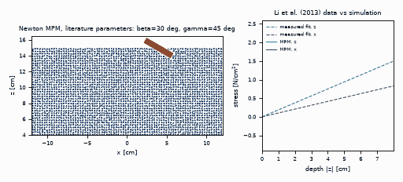
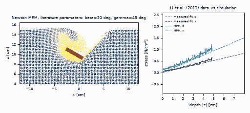
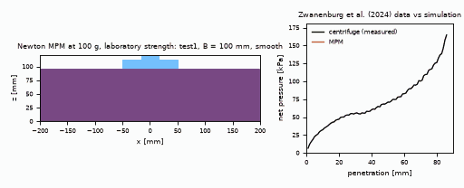
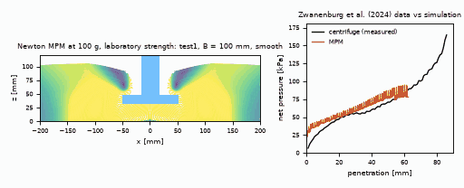
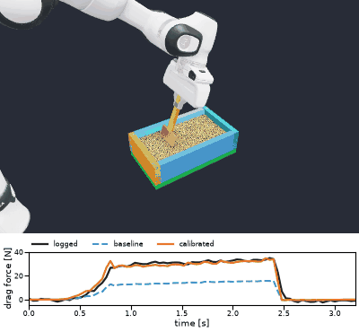
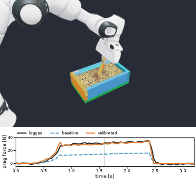
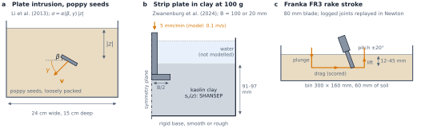
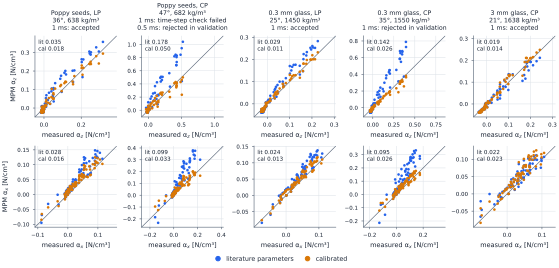
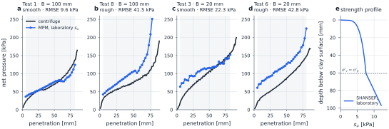

Implicit MPM soil in Newton: validation against published experiments and a calibration workflow for robot force logs
Newton’s implicit material point method is compared with plate intrusion in five granular media and strip-plate loading of soft clay in a centrifuge. The granular models are calibrated with numerical qualification, identifiability analysis and held-out validation, and a Franka rake workflow that calibrates soil from tool forces is demonstrated on synthetic logs.
Abstract
Robots that dig, rake or walk on soil can only learn from a simulator whose soil forces are right. We compare Newton’s implicit material point method (MPM) with two published experiments that provide open force data, and calibrate its material parameters inside a lifecycle that qualifies the numerics, analyses identifiability and validates on held-out data. For plates moved through five granular media (Li, Zhang & Goldman, 2013), a replica of the full bed predicts the stress per unit depth for 78 plate orientations and directions of motion per medium. With friction taken from each medium’s tabulated angle of repose, the two loosely packed media and the coarse glass are predicted to 7–12 % of the largest measured lift, but the two closely packed fine media are over-predicted about twofold. Calibrating soil friction and plate friction on five motions per medium was accepted for the two loosely packed media and the coarse glass, with held-out lift errors of 4–5 % of the largest measured lift, and rejected for the two closely packed fine media: their held-out errors fell by 67–82 %, but shallow intrusions, whose measured lift is nearly that of broadside intrusion, stayed outside the error limit. For strip plates pushed into soft kaolin clay at 100 g (Zwanenburg et al., 2024), a plane-strain replica with the laboratory strength profile reproduces the wide smooth plate to 9.6 kPa RMSE without any fitted parameter, but narrow and rough plates are over-predicted, and the clay pressures do not converge with the time step: halving it from 0.5 to 0.25 ms raised the mean error of every test again, by 6–25 kPa. The verification tests show where implicit MPM needs care: piecewise-constant strain for frictional flow but linear strain for undrained clay under high gravity, up to 2000 rheology iterations for clay, time steps checked by refinement, and contact-force artifacts of plates moving through the particles. Finally, a Franka FR3 rake workflow replays logged joint trajectories in Newton and calibrates soil friction, cohesion and tool friction from tool forces. On synthetic logs generated at a finer time step, the calibration was accepted with 1.0–2.0 N RMSE per stroke. Soil friction was recovered within 6 %, but cohesion and tool friction absorbed the numerical mismatch between the generating and the calibrated model.
granular media pass held-out validation after calibrating on five motions, with lift errors of 4–5 % of the largest measured lift; both closely packed fine media fail at shallow intrusions.
Over-prediction for the two closely packed fine media when friction comes from their tabulated angle; the loose and coarse media are predicted to 7–12 % of the largest lift.
Clay plate pressures rise again when the time step is halved to 0.25 ms; the wide smooth plate’s 9.6 kPa agreement at 0.5 ms is not a converged result.


(a) Plate intrusion, β = 30°, γ = 45°

(b) Centrifuge test 1, B = 100 mm, smooth

(c) Franka rake, held-out stroke1Introduction
Robots increasingly learn to dig, rake, plough and walk on deformable ground in simulation before they act in the field. The forces that soil exerts on a tool or a foot determine what such a robot learns, yet simulators are usually judged by whether the material looks plausible. A granular pile that slumps convincingly can still resist a plate with the wrong magnitude or in the wrong direction, and that error transfers into the learned behaviour.
The material point method (MPM) (Sulsky et al., 1994) is a standard continuum approach for large-deformation granular materials in computer graphics (Klár et al., 2016; Daviet & Bertails-Descoubes, 2016) and is increasingly used in robotics simulators. Its forces depend on constitutive parameters such as friction, cohesion and density, and on numerical choices that are easy to overlook: the discretization of strain and contact, the time step and the convergence of the implicit solve. Experimental checks of these forces are much rarer than demonstrations of motion.
Fitting parameters to measured forces does not settle the question either. A fit can compensate a numerical error with a wrong material parameter, the chosen experiments may not determine all parameters, and a good fit on training data says nothing about other loading paths. Verification and validation practice (Oberkampf & Roy, 2010) separates these concerns: first show that the numerics solve the model accurately, then compare the model with experiments it was not fitted to.
We apply that discipline to the implicit MPM solver of the Newton physics engine (Newton contributors, 2026a), using the calibration lifecycle of newton-calibration (newton-calibration contributors, 2026). Figure 1 shows the three cases. Our contributions are:
- Replicas of two open soil experiments that follow the original protocols: plate intrusion at 78 orientation–direction pairs in each of five granular media (Li et al., 2013) and strip-plate loading of soft clay in a geotechnical centrifuge (Zwanenburg et al., 2024).
- Predictions from independently measured parameters, followed by calibrations of all five granular media with numerical qualification, identifiability analysis and validation on held-out motions, and a report of the configurations that the lifecycle rejected.
- Verification tests and observations for implicit MPM: force read-back, Rankine and Prandtl limits, strain basis, rheology iterations, time-step sensitivity and contact-force artifacts in per-step force records.
- A workflow from Franka FR3 rake force logs to a calibrated soil, with a log format and trajectory export, demonstrated on synthetic logs.
3Methods



3.1Material model
SolverImplicitMPM represents the soil by particles that carry mass, velocity and plastic state on a sparse background grid. Every step solves for the grid velocities and the stresses that satisfy momentum balance, contact with colliders and the yield condition
where p is the mean pressure (compression positive), J2 the second invariant of the deviatoric stress, μ the friction coefficient, τy the yield stress and rtpy a tensile limit. We use the rigid-plastic limit (Young’s modulus 1015 Pa): all deformation is plastic flow, and no elastic stiffness has to be calibrated. In plane-strain plastic flow the intermediate principal stress is the mean of the other two, so √J2 = (σ1 − σ3)/2 and p = (σ1 + σ3)/2, and the Mohr–Coulomb criterion with friction angle φ and cohesion c maps to
Dry granular media therefore have μ = sin φ and τy = 0, and undrained clay has μ = 0 and τy = su, the undrained shear strength (Tresca). The friction parameter is thus the continuum friction √J2/p of dense granular flow models (Jop et al., 2006). Weight enters through the particle mass, i.e. the bulk density. Colliders are kinematic bodies with Coulomb friction. All cases use two particles per cell axis (eight per voxel), APIC transfer, trilinear (Q1) velocities and the default sample-based (S2) collider basis. The strain basis is piecewise constant per cell (P0) for granular media and linear discontinuous (P1d) for clay, a choice made by the verification tests of Section 4.1.
3.2Force on a body
The force that the material applies to a kinematic body b is the sum of the impulses exchanged with its colliders during the step, divided by the step:
The sums run over the collider samples 𝒞b of body b, which the solver reports with their impulses Ii and positions xi; xb is the body origin. We accumulate both sums on the GPU at every step, for all worlds of a batch, without copying data to the host.
3.3Calibration and acceptance
Each case is an asset, a parameterized simulation, evaluated against evidence: experiments with reference observations ŷk, an observation scale s and a mask of scored samples, split into training and validation groups that share no acquisition. For parameters θ the objective is the mean squared normalized residual over the K scored samples,
so that J = 1 corresponds to an RMSE of one scale. The lifecycle (Figure 3) passes through fixed stages and ends with an explicit outcome:
- Baseline. Simulate the prior parameters: literature values, laboratory values or a generic guess.
- Numerical qualification. Repeat the training simulations with the time step halved, at the baseline and at probe points spread over the parameter box, and require
(5)A failure ends the run as
rejected_numericsbefore any parameter is fitted. The criterion bounds the change of every sample; it does not bound a systematic change of the objective that stays below δ per sample. - Sensitivity and identifiability. Finite-difference Jacobians of the normalized residuals at anchor points; the singular values of the stacked sensitivities, in normalized parameter coordinates, give the rank and conditioning of the local problem.
- Search. CMA-ES (Hansen & Ostermeier, 2001), as implemented in pycma (Hansen et al., 2026), over the parameter box normalized to [0, 1] (log-transformed where noted), with budgets on candidates and generations, a target objective and a patience for stagnation.
- Export, reload and retest. The best candidate is exported, rebuilt from the export, and the parameters applied inside the simulator are read back and compared with the requested ones (relative tolerance 10−5, 10−4 for clay). The rebuilt asset is re-simulated on the training data.
- Validation. The released asset is simulated on the held-out groups and accepted only if
(6)and if the time-step refinement (5) also holds at the released parameters.
Table 1 lists the configuration of the three cases. Each case simulates every candidate, experiment and plate path as an isolated MPM world; worlds are batched on one GPU (separate_worlds).
| Plate intrusion (granular) | Strip plate (clay) | Franka rake (demonstration) | |
|---|---|---|---|
| Material | five media of Li et al. (2013), rigid-plastic Drucker–Prager, no cohesion | kaolin clay, rigid-plastic Tresca, su(z) per particle | moist-sand prior, rigid-plastic Drucker–Prager with cohesion |
| Domain | full bed 24 × 22 × 15 cm, plate as kinematic body | half box, plane-strain slab 435 × 10 mm, clay 91–97 mm, 100 g | bin 300 × 160 mm, 60 mm of soil; FR3 replays logged joints |
| Voxel, particles | 6 mm; 8 per voxel, 25 % jitter; ≈ 290 000 | 2.5 mm; 8 per voxel, regular lattice; ≈ 214 000 (test 1) | 10 mm; 8 per voxel, 25 % jitter; 23 040 |
| Strain basis | P0 | P1d | P0 |
| Time step (refinement) | 1 ms (0.5 ms); 0.5 ms (0.25 ms) for poppy seeds CP | 0.5 ms (0.25 ms in Section 4.5) | 2 ms (1 ms) |
| Rheology iterations, tolerance | ≤ 250, 10−5 | ≤ 2000, 10−5 | ≤ 250, 10−5 |
| Tool speed (experiment) | 10 cm/s (1 cm/s) | 0.1 m/s (5 mm/min) | as logged, 60–100 mm/s drag |
| Fixed parameters | bulk density 638–1638 kg/m³ (Section 4.4) | buoyant density 672 kg/m³ | bulk density 1500 kg/m³ |
| Calibrated parameters | soil friction μ ∈ [sin(φ − 9.3°), sin(φ + 4.5°)], [0.45, 0.65] for poppy seeds LP; plate friction μp ∈ [0, 0.5] | sum ∈ [1, 10] kPa, k ∈ [20, 150] kPa/m | μ ∈ [0.35, 0.80], cohesion τy ∈ [20, 600] Pa (log), tool friction μt ∈ [0.05, 0.65] |
| Scale s; tolerance δ | 8.5 % of the largest measured lift (0.03 N/cm³ for poppy seeds LP); δ = s | 10 kPa; 8 kPa | 2 N; 3 N |
| Training / validation | 5 / 73 plate paths per medium | test 1 / tests 8, 6, 3 | 3 / 2 strokes |
| Search | CMA-ES, 6 per generation, ≤ 5 generations | CMA-ES, 6 per generation, ≤ 3 generations | CMA-ES, 8 per generation, ≤ 12 generations, patience 4 |
| Acceptance | Jval ≤ 1, emax = 3 | Jval ≤ 1, emax = 3 | Jval ≤ 1, emax = 4 (8 N) |
3.4Plate intrusion in a granular bed
Experiment. Li et al. (2013) moved an aluminium plate of 3.81 × 2.54 × 0.64 cm at 1 cm/s with a six-axis robot arm and force sensor through an air-fluidized bed 24 × 22 cm wide and 15 cm deep. For every attack angle β, measured from the −x axis up to the plate, and intrusion angle γ, measured from the −x axis down to the velocity (Figure 2a), the stress on the plate grows linearly with depth:
The second expression is the zero-intercept least-squares fit we apply to simulated samples. The article’s additional data table S5 lists the measured αz and αx on a 7 × 13 grid of (β, γ) for five media; the two β = ±90° rows describe the same vertical plate, leaving 78 distinct points. We replicate all five media: poppy seeds (0.7 mm, 1.1 g/cm³) and 0.3 mm glass spheres (2.5 g/cm³), each loosely (LP) and closely packed (CP), and closely packed 3 mm glass spheres (2.6 g/cm³). The article’s table S1 gives each its volume fraction and an angle of repose (Section 4.4). Loosely packed poppy seeds were the first medium we studied and serve as the reference in Sections 4.2 and 4.3.
Replica. Each (β, γ) pair follows the paper’s protocol. Intrusions (γ > 0) start with the plate at the surface; extractions (γ < 0) start at the deep end of the same straight path, as the experiment buried the plate before pulling it out; horizontal drags (γ = 0) run at 2.54, 5.08 and 7.62 cm depth. Plate centres stay at least 6 cm from the side walls, and the plate’s 3.81 cm side lies in the plane of motion. Slopes are fitted by (7) while the plate is fully submerged and above 7.62 cm; horizontal drags average the steady state after 3 cm of travel at each depth, as in the paper. The plate moves at 10 cm/s: Li et al. report forces that change by less than 20 % between 1 cm/s and 1 m/s, and in the replica they change by 2–5 % between 5 and 10 cm/s. The container walls have friction 0.4.
Parameters. Literature values are μ = sin φ from the medium’s tabulated angle via (2), 0.588 for the 36° of poppy seeds LP; the plate friction μp = 0.40 that Li et al. measured for aluminium on poppy seeds, which we also assume for glass because the article gives no value for it; and the bulk density from particle density and volume fraction, 638 kg/m³ for poppy seeds LP and up to 1638 kg/m³ for 3 mm glass. For calibration we train on five points that span the mechanisms: broadside intrusion (0°, 90°), oblique ploughing (30°, 45°), oblique slicing (−30°, 45°), edge-on slicing (90°, 90°) and extraction (60°, −45°). The other 73 points, including every horizontal drag, are held out. The friction bounds are sin(φ − 9.3°) to sin(φ + 4.5°) around each medium’s tabulated angle φ, 0.45–0.65 (27–41°) for poppy seeds LP, and the observation scale is the same fraction, 8.5 %, of each medium’s largest measured lift: 0.03 N/cm³ for poppy seeds LP and 0.021–0.048 N/cm³ for the others. The held-out set is not blind: we ran the 78-point literature sweep first, and a first calibration, rejected at the time-step check (Section 4.1), trained on six points including the face-on drag (90°, 0°) with wider bounds (μ ≤ 0.85, μp ≤ 0.6). The training set and bounds of the accepted run were chosen after these runs. For the other four media the same training points and the rules for bounds and scales were fixed before any of their runs.
Execution. The poppy-seed LP runs used the workstation GPU. The four other media and the time-step checks of Sections 4.1 and 4.5 ran as independent single-GPU jobs on NVIDIA L40S GPUs through NVIDIA OSMO, with Newton and newton-calibration fetched at their pinned revisions and checked by hash, and with a slightly newer Warp development build (1.20.0.dev20261120; the build used on the workstation is no longer distributed). A rerun of the poppy-seed LP literature sweep in this environment reproduced all 78 values to within 0.0003 N/cm³.
3.5Strip-plate loading of soft clay at 100 g
Experiment. Zwanenburg et al. (2024) pushed rigid strip plates into a layer of soft kaolin clay at 100 g in the Deltares GeoCentrifuge. The strong box is 870 mm long and 200 mm wide; the plates are 195 mm long across the box (plane strain), 100 or 20 mm wide (B), 15 or 10 mm thick on 30 or 10 mm shafts, and either smooth (polished aluminium) or rough (grip tape on the underside). They were pushed at 5 mm/min to about 4 mm above the base while load and plunger displacement were logged at 1 Hz. Laboratory tests on the first clay batch give a saturated unit weight of 16.4 kN/m³ and the SHANSEP parameters S = 0.19, m = 0.8 and a preconsolidation stress of 40 kPa. We use four of the eight tests: 1 (100 mm, smooth) and 3 (20 mm, smooth) from the first clay batch, and 8 (100 mm, rough) and 6 (20 mm, rough) from the second; their clay layers are 96.5, 95.0, 90.8 and 94.1 mm thick. Roughness is therefore confounded with clay batch.
Evidence processing. From the raw logs we take the longest stretch of plunger motion at 4–6 mm/min, fit a line to the load over the first 5 mm while the plate moves through water, and detect contact where the load rate exceeds max(3a, a + 6 N/mm) for 1 mm, with a the approach slope; the contact point is refined by intersecting the approach line with the tangent over the next 1.5 mm. After contact, the increase of shaft buoyancy minus the increase of plate weight in the centrifuge field is removed and the force is divided by the plate area:
with penetration u after contact, load Fc at contact, shaft width d, plate length L = 195 mm, plate mass m, gN = 100 g and ω2 = gN/r for the 4.795 m radius to the clay surface. The result is the net resistance of clay with buoyant unit weight, which is what the simulation computes. For the narrow plates the approach slope in water matches the geometric buoyancy-minus-weight slope to within 0.2 N/mm. For the wide plates it is about 11 N/mm steeper, so only the geometric slope is removed after contact.
Replica. The simulation is a plane-strain slab through the centre of the box: half the box length (435 mm) with a frictionless symmetry wall at the plate centre, four voxels (10 mm) thick between frictionless walls, at 100 g (Figure 2b). Pore water is not modelled; the clay is a rigid-plastic Tresca material with the buoyant density (ρsat − ρw) = 672 kg/m³, a total-stress undrained analysis. Smooth contacts are frictionless and rough contacts have friction 1.0; the rough plates carry a 1 mm rough pad on the underside while their edges and shafts remain smooth, and the base is rough or smooth as in each test. Each particle receives the strength of its initial depth from either the laboratory SHANSEP profile or a linear profile:
The plate moves at 0.1 m/s; the rigid-plastic model has no rate dependence. Simulated pressures are averaged over ±0.5 mm of penetration and scored every 2.5 mm from 5 mm until 12 mm of clay remain below the plate. The start reflects the 1–2 mm uncertainty of the measured contact point and the impact of a plate that meets rigid-plastic clay at full speed. The end avoids a layer of only two to four voxels between a rough plate and a rough base, which locked in a trial run (650 against 154 kPa at 85 mm in test 8).
Calibration setup. We calibrate the linear profile, the usual soft-clay description offshore, whose mudline strength acts mainly on the shallow response and whose gradient acts on the deep response. We train on test 1 and hold out tests 8, 6 and 3, starting from the straight line through the laboratory profile (4.2 kPa and 69 kPa/m).
3.6Robot raking
Scene. A Franka FR3 with hand, from the Newton asset repository (Newton contributors, 2026b), stands at the origin; the soil bin is 300 × 160 mm inside with 60 mm of soil, its floor centred 0.60 m in front of the base. The rake has a 16 mm square shaft, 200 mm long, and an 80 × 40 × 8 mm blade; the tool tip is the centre of the blade’s bottom edge, 240 mm from the flange along the hand axis. A stroke holds the tip 15 mm above the levelled surface for 0.15 s, plunges at 80 mm/s, drags along +x and lifts out (Figure 2c). Section 4.6 lists the five strokes: three for training at 12, 45 and 30 mm depth (the last with +20° blade pitch) and two held out with a faster drag, a lateral offset and a backward pitch never seen in training.
Trajectories and replay. Newton’s inverse kinematics (Levenberg–Marquardt on position, orientation and joint-limit objectives) converts each tool-tip path into 100 Hz joint trajectories, with tip errors below 1 mm and joint steps below 0.05 rad; these files are what the real robot executes. In simulation the arm replays the logged joint positions kinematically, interpolated linearly and passed through forward kinematics every step, so tracking errors of the real robot are reproduced. The rake is a kinematic body that follows the hand, and only the rake collides with the soil. This one-way coupling suits a stiff position-controlled arm. The observation is the soil force on the rake in the base frame, averaged over each log sample window like a filtered sensor.
Logs and synthetic data. A log is a uniformly sampled CSV with time, seven joint positions and the six-axis wrench in the base frame (torques about the flange), plus a JSON sidecar with the stroke, its acquisition group and sensor, tool and bin metadata. The demonstration logs are synthetic. Newton generated them for hidden parameters μ = 0.62, τy = 250 Pa and μt = 0.35, at a 1 ms step and with a different particle arrangement than the calibration model, so that the calibration faces a model mismatch as it would with real data. The simulated forces were averaged to 25 Hz samples, filtered by a first-order 8 Hz low-pass, offset by a random bias per axis (standard deviation 0.4 N and 0.02 N m), perturbed by white noise (0.6 N and 0.03 N m) and zeroed on the initial in-air hold. The calibration never reads the hidden values.
Calibration setup. The rake’s cohesion parameter is the yield stress τy of (1); a Mohr–Coulomb cohesion c = τy/cos φ is about 27 % larger. Bulk density is fixed at its true value of 1500 kg/m³; with a real bin it is obtained by weighing the levelled soil. The baseline guess is a generic sand (μ = 0.5, τy = 100 Pa, μt = 0.5). Only fx, fy and fz during the drag are scored, from 0.12 s after the drag starts to its end; because each 25 Hz log sample averages ±20 ms, the last scored sample of a stroke overlaps the start of the lift. Pushing the blade edge, thinner than a voxel, straight down changed the vertical force by up to 10 % when the step was halved, while drag forces changed by less than 2.5 N, so plunge and lift are not scored. CMA-ES searches the unrotated normalized box: in rotated combination coordinates most proposals decoded outside the bounds.
3.7Verification tests
Before any calibration we ran element and boundary-value tests with known answers (Table 2): the weight of a resting column, plane-strain compression of a Tresca block, Rankine’s passive earth pressure (Rankine, 1857) on a smooth wall pushed into frictional material, Prandtl’s bearing capacity of a smooth strip on weightless clay, and the bearing pressure of the centrifuge plate on uniform clay with and without gravity. After the main runs we also recorded the plate force at every step for one path of each validation case. All tests use the material model of Section 3.1 with the settings stated in Table 2.
4Results
4.1Verification and numerical configuration
| Test | Setup | Reference | Newton MPM |
|---|---|---|---|
| Force read-back | column 0.1 × 0.1 × 0.05 m, 1000 kg/m³, on a kinematic plate; h = 5 mm | weight | within 0.01 % |
| Plane-strain compression | Tresca block, su = 5 kPa, elastic modulus 300 su, smooth platens at 1 cm/s | σ1 − σ3 = 2 su | 1.85 su (93 %), limited by solver convergence |
| Rankine passive pressure | smooth wall pushed 20 mm into a 10 cm deep frictional bed, φ = 36°, rigid-plastic; h = 5 mm | Kp = (1 + sin φ)/(1 − sin φ) = 3.85 | P0: 4.03 (+5 %); P1d: 4.62 (+20 %) |
| Prandtl bearing capacity | smooth strip, B = 40 mm, on weightless Tresca clay, su = 5 kPa; P0, h = 2.5 mm, 1 ms; pressure at 6–8 mm penetration | Nc = 2 + π = 5.14 | 4.96 rigid-plastic (−3.5 %); 4.40 with elastic modulus 400 su and 500 iterations |
| Centrifuge plate on uniform clay, 100 g | B = 100 mm smooth plate on su = 6 kPa, mean pressure over 5–30 mm | ≈ 42 kPa (Prandtl 30.8 kPa + overburden) | P0: 5.4 kPa; P1d: 37.3 kPa |
| Same, without gravity | as above, 0 g | ≥ 30.8 kPa (Prandtl; embedment raises it) | P0: 22.5 kPa; P1d: 27.1 kPa |
| Resting clay layer | 6 kPa clay at 100 g for 0.1 s | no motion | ≤ 500 iterations: creeps, 25 % compaction; 2000: stable |
| Time step, plate intrusion | training values, Δt against Δt/2, δ = s | change ≤ δ | Poppy seeds LP (δ = 0.03 N/cm³), 2 ms: up to 0.083 N/cm³ (rejected); 1 ms: up to 0.013 N/cm³ (passed); training objective 1.43 → 1.93 at the literature parameters, 0.72 → 0.76 at the released ones; held-out objective 1.11 → 1.37 and 0.33 → 0.38. Glass media, 1 ms: up to 0.42–0.87 δ (passed). Poppy seeds CP (δ = 0.048 N/cm³), 1 ms: up to 0.063 N/cm³ (rejected); 0.5 ms against 0.25 ms: up to 0.034 N/cm³ (passed) |
| Time step, clay | test 1, Δt against Δt/2, δ = 8 kPa | change ≤ δ | 1 ms: up to 15 kPa (rejected). 0.5 ms against 0.25 ms: mean errors rise again by 5.7–25.2 kPa, single samples by up to 47 kPa; not converged |
| Time step, rake | training forces, Δt against Δt/2, δ = 3 N | change ≤ δ | 2 ms: up to 2.4 N (passed); at the released parameters 2.4 N, training objective 0.32 → 0.43 |
| Force at every step | plate force of one path per validation case (Figure 4) | smooth in depth | granular (25 % jitter): oscillates with the 6 mm voxel period between 0.7 and 1.3 × trend. Clay (regular lattice): collapses for 2–3 steps every 1.25 mm; at 0.25 ms for five steps, the same travel, while the median level rises by 4–13 % |
The force read-back is accurate to 0.01 % for a static load. In a small weightless test, rigid-plastic clay reaches 96.5 % of Prandtl’s factor. In the centrifuge geometry without gravity, however, P1d stays 12 % below it, although the plate’s embedment should raise the capacity. Two findings shaped the configuration. First, no single strain basis serves both materials. Piecewise-constant strain (P0) reproduces Rankine’s passive pressure within 5 %, while linear discontinuous strain (P1d) over-predicts it by 20 %, consistent with locking in dilatant frictional flow. For undrained clay at 100 g the order reverses: P0 transmits only 5.4 of about 42 kPa, while P1d reaches 37.3 kPa. Without gravity the two bases differ much less (22.5 and 27.1 kPa), so the large hydrostatic stress at 100 g exposes the weakness of piecewise-constant pressure in incompressible plasticity. Second, unconverged rheology solves relax stress: with 500 iterations a resting layer of 6 kPa clay at 100 g crept and compacted by 25 % within 0.1 s, so clay runs allow up to 2000 iterations.
The time-step qualification rejected three configurations: a first granular calibration at 2 ms, the poppy-seed CP calibration at 1 ms and a first clay calibration at 1 ms. For poppy seeds CP the failing probes were the high-friction ones near its tabulated angle of 47°, whose training values changed by 0.060 and 0.063 N/cm³ against δ = 0.048 N/cm³, while a probe at 40.7° changed by 0.025 N/cm³; that calibration was repeated at 0.5 ms with a 0.25 ms refinement. The per-sample criterion also hides systematic changes. At 1 ms every training value of poppy seeds LP changed by at most 0.013 N/cm³ when the step was halved, well inside δ = 0.03 N/cm³, yet the training objective at the literature parameters rose from 1.43 to 1.93. Repeating the full 78-point sweeps at 0.5 ms quantifies the effect on the held-out results. The literature model’s held-out RMSE rises from 0.035/0.028 to 0.040/0.030 N/cm³ (objective 1.11 → 1.37), whereas the calibrated model changes only from 0.018/0.016 to 0.020/0.018 N/cm³ (0.33 → 0.38) and stays well inside the acceptance limit. For clay, by contrast, refining the step from 0.5 to 0.25 ms raised the mean error of every test again, by 5.7–25.2 kPa, about as much as the refinement from 1 to 0.5 ms (Section 4.5): the clay pressures do not converge with the time step down to 0.25 ms.


The per-step records, taken after the main runs, show contact-force artifacts that window averages hide (Figure 4). In the clay, whose particles sit on a regular lattice, the plate force drops to nearly zero for two to three steps every 1.25 mm, about 0.1 mm before the plate underside reaches each layer of particle centres; over a 1 mm window this lowers the mean by 9–14 % relative to the median. In the granular bed, whose particles are jittered by 25 % of their spacing, the force does not collapse but alternates with the 6 mm voxel period between about 0.7 and 1.3 times its linear trend. The depth fit (7) averages over about ten such periods for the broadside path and over fewer for paths that end at shallow depth; for the broadside path, excluding the low phase (8 % of the fit window) would raise the fitted slope by 2.7 %. We did not change the scored configurations after observing these artifacts. Repeated at 0.25 ms, the clay dropouts last five steps, the same 0.1–0.13 mm of travel, and still lower the window means by 12–14 %. The dropout-free median level itself rises by 2.4–5.3 kPa (4–13 %) relative to 0.5 ms, so the time-step dependence of the clay lies in the plastic flow and contact, not in the dropouts alone.
4.2Plate intrusion with literature parameters


Without any fitted parameter the replica reproduces the structure of both measured maps (Figure 5). Lift is largest for downward motion of a horizontal plate and nearly vanishes for extraction. Drag changes sign with the attack angle for steep downward motion, and the asymmetry between positive and negative attack angles is preserved. Over all 78 points the RMSE is 0.036 N/cm³ for αz and 0.027 N/cm³ for αx (R² 0.86 and 0.59), about 10 % and 8 % of the largest measured stress (0.351 N/cm³). The broadside intrusion (0°, 90°), which Li et al. use to scale their model, is predicted within 5 % (0.367 against 0.351 N/cm³). The errors are systematic: the simulation resists too much on average (bias +0.017 and +0.020 N/cm³). The clearest pattern is horizontal drag. Every horizontal drag is too high, by 0.02–0.04 N/cm³ (drag bias +0.031 against +0.020 N/cm³ for the other points), and the vertical plate dragged face-on (90°, 0°) reads 0.112 against 0.071 N/cm³. Motion along the plate is not worse than motion normal to it. On the 73 points later held out, the literature model scores J = 1.11, just above the acceptance limit of 1.0; its largest error, 2.9 scales, is inside the limit of 3.
4.3Plate intrusion: calibration
With a 1 ms step the calibration passed qualification (largest change 0.013 N/cm³ against δ = 0.03 N/cm³), and both parameters were locally identifiable from the five training points (rank 2, singular values 6.4 and 1.0). CMA-ES ran its budget of five generations of six candidates. The lifecycle took 3.9 h of wall time on a GPU shared with other runs. Table 3 compares the released asset with the literature model; it was accepted.
| Literature parameters | Calibrated | |
|---|---|---|
| Soil friction μ (Mohr–Coulomb angle) | 0.588 (36.0°) | 0.564 (34.3°) |
| Plate friction μp | 0.40 (measured) | 0.23 (effective) |
| Training objective, 5 points | 1.36 (1.43)* | 0.72 |
| Held-out objective Jval (limit 1.0) | 1.11 | 0.33 |
| Largest held-out error, scales (limit 3.0) | 2.9 | 2.0 |
| Held-out RMSE αz / αx [N/cm³] | 0.035 / 0.028 | 0.018 / 0.016 |
| Held-out bias αz / αx [N/cm³] | +0.015 / +0.021 | +0.001 / +0.012 |
| Held-out R² αz / αx | 0.85 / 0.57 | 0.96 / 0.86 |
| Broadside intrusion αz(0°, 90°), measured 0.351 | 0.367 | 0.303 |
| Vertical plate dragged face-on, αx(90°, 0°), measured 0.071 | 0.112 | 0.095 |
* The literature column comes from the 78-point sweep. The calibration’s own baseline, with a different particle arrangement, scored 1.43 on the training points; individual values differ by up to 0.0045 N/cm³ between the two arrangements.


Calibration reduces the held-out RMSE by 49 % for αz and 42 % for αx and removes most of the bias (Figure 6). The soil friction stays close to its repose-angle value (34.3° against 36°), while the plate friction drops to 0.23, about 60 % of the measured aluminium–poppy-seed value. Halving the step at the released parameters changed the training values by at most 0.012 N/cm³. The improvement has a price at the training point that anchors RFT: the broadside intrusion moves from +5 % to −14 % (0.303 against 0.351 N/cm³), most directly because of the lower soil friction, since broadside loading is normal to the plate. Horizontal drags, absent from training, improve but remain the largest systematic error (0.095 against 0.071 N/cm³ for the face-on drag).


The plate friction is only loosely determined (Figure 7). The best candidate appeared in the second generation and was not improved in the remaining three. Near the literature soil friction the objective kept falling as the plate friction dropped (1.43 at 0.40, 1.22 at 0.28 and 0.99 at 0.02). We read the fitted plate friction as an effective value: one hypothesis is that it compensates extra tangential resistance at grid contacts, where the 6 mm voxel is as large as the plate is thick, but we did not test this.
4.4Five granular media
Table 4 and Figure 8 extend the comparison to all five media of Li et al. Literature parameters involve no fitting, so we score them over all 78 motions. Three media are predicted about as well as the reference: 0.3 mm glass LP with lift and drag RMSE of 12 % and 10 % of its largest measured lift, and 3 mm glass CP with 7 % for both. On its 73 held-out motions the literature model of 3 mm glass CP already meets the acceptance limits (objective 0.66, largest error 2.4 scales). The two closely packed fine media are over-predicted about twofold, with lift RMSE of 34 % and 38 % of the largest lift and negative R². Their tabulated angles, 47° and 35°, exceed the loosely packed angles of the same particles by 11° and 10°, the extra peak strength that dilatancy gives a close packing; a rigid-plastic model without dilatancy turns it into a steady flow resistance. Density alone does not explain the glass results: 0.3 mm glass CP is 2.4 times denser than poppy seeds LP and has a similar angle, yet its measured broadside lift is only 13 % higher, while the simulated one more than doubles.
| Medium | Angle φ | Bulk density [kg/m³] | Scale [N/cm³] | Literature RMSE [N/cm³] | Literature objective | Calibration outcome | Friction (angle) | Plate friction | Calibrated RMSE [N/cm³] | Calibrated objective; largest error |
|---|---|---|---|---|---|---|---|---|---|---|
| Poppy seeds LP | 36° | 638 | 0.030 | 0.035 / 0.028 | 1.11 | 1 ms: accepted | 0.564 (34.3°) | 0.23 | 0.018 / 0.016 | 0.33; 2.0 |
| Poppy seeds CP | 47° | 682 | 0.048 | 0.178 / 0.099 | 9.01 | 1 ms: time-step check failed; 0.5 ms: rejected in validation | 0.624 (38.6°) | 0.37 | 0.050 / 0.033 | 0.77; 5.6 |
| 0.3 mm glass LP | 25° | 1450 | 0.021 | 0.029 / 0.024 | 1.56 | 1 ms: accepted | 0.396 (23.3°) | 0.23 | 0.011 / 0.013 | 0.32; 1.4 |
| 0.3 mm glass CP | 35° | 1550 | 0.034 | 0.142 / 0.095 | 12.61 | 1 ms: rejected in validation | 0.466 (27.8°) | 0.18 | 0.026 / 0.026 | 0.59; 3.5 |
| 3 mm glass CP | 21° | 1638 | 0.025 | 0.019 / 0.022 | 0.66 | 1 ms: accepted | 0.389 (22.9°) | 0.18 | 0.014 / 0.023 | 0.57; 2.3 |
Literature parameters: μ = sin φ, plate friction 0.40 (measured by Li et al. for aluminium on poppy seeds and assumed for glass), bulk density from table S1. Acceptance requires a held-out objective of at most 1.0 and no held-out error above 3 scales. Poppy seeds LP ran on the workstation GPU, the other media on OSMO L40S GPUs.



Calibration brings all five media close to their measurements, and the outcomes follow the acceptance rules. For the loosely packed and coarse media it moved the friction angle by about 2° (34.3°, 23.3° and 22.9° against 36°, 25° and 21°) and was accepted, with the largest gain for 0.3 mm glass LP (held-out RMSE −63 % and −45 %, objective 1.56 → 0.32). For 0.3 mm glass CP it lowered the friction angle by 7°, to 27.8°, and reduced the held-out RMSE by 82 % and 72 % (R² 0.96 and 0.84). Two shallow intrusions at γ = 18.4°, whose paths end 4 cm below the surface, remained 3.4 and 3.5 scales too low, above the limit of 3, so the lifecycle rejected the result. Poppy seeds CP, calibrated at 0.5 ms after its 1 ms qualification failed, behaved the same way: the friction angle dropped by 8° to 38.6° and the held-out RMSE by 72 % and 67 % (R² 0.91 and 0.80), but the shallow intrusion of a horizontal plate (0°, 18.4°) kept only half its measured lift, 5.6 scales too low. In both closely packed fine media this motion carries 91–93 % of the broadside lift, against 59–66 % in the other three media. The calibrated models give 46–68 % for all five media, close to the loose and coarse media but far from the closely packed fine ones; one explanation is that dense packing dilates and heaves ahead of a shallow plate, which a model without dilatancy cannot reproduce. The fitted plate friction settled at 0.18–0.23 for four media, about half the value measured for aluminium on poppy seeds, and at 0.37 for poppy seeds CP, the one medium calibrated at 0.5 ms.
4.5Strip plates in clay with laboratory strength



| Test | Plate width B | Surface | Clay batch | Scored range [mm] | RMSE, 0.5 ms [kPa] | Mean error, 0.5 ms [kPa] | RMSE, 1 ms [kPa] | Mean error, 1 ms [kPa] | RMSE, 0.25 ms [kPa] | Mean error, 0.25 ms [kPa] |
|---|---|---|---|---|---|---|---|---|---|---|
| 1 | 100 mm | smooth | 1 | 5–82.5 | 9.6 | −0.1 | 9.3 | −3.9 | 8.8 | +5.6 |
| 8 | 100 mm | rough | 2 | 5–77.5 | 41.5 | +31.7 | 35.5 | +22.2 | 55.6 | +44.7 |
| 3 | 20 mm | smooth | 1 | 5–82.5 | 22.3 | +15.7 | 16.9 | +1.3 | 36.0 | +29.3 |
| 6 | 20 mm | rough | 2 | 5–80 | 42.8 | +42.1 | 20.8 | +19.8 | 68.3 | +67.3 |
Table 5 lists the four tests. With the laboratory strength and no fitted parameter, the wide smooth plate follows the measured curve over its whole penetration (Figure 9a): 9.6 kPa RMSE and a mean error of −0.1 kPa. Its half-width spans 20 voxels. At 0.25 ms its RMSE is 8.8 kPa with a mean error of +5.6 kPa. The simulation over-predicts the first 20 mm (36 against 23 kPa at 5 mm) and under-predicts the last 20 mm, where the measured resistance rises steeply as the base approaches (124 against 138 kPa at 82.5 mm). The other three tests are over-predicted, and we cannot assign a single cause:
- The narrow plates have a half-width of only four voxels. Test 3, smooth and from the same clay batch as test 1, starts far too stiff (64 against 19 kPa at 5 mm) and is within about 11 kPa of the measurement from 57.5 mm onward (152 against 156 kPa at 82.5 mm). Its mean error grew from +1.3 to +15.7 and +29.3 kPa with each halving of the step.
- The rough tests carry a band of clay with the plate and the base, and they used the second clay batch, whereas the laboratory strength used here comes from the first. Their mean errors (+31.7 and +42.1 kPa) therefore combine rough-contact modelling and possible batch differences. They grew strongly with each finer step; the RMSE of test 6 went from 20.8 (1 ms) to 42.8 (0.5 ms) and 68.3 kPa (0.25 ms).
Both numerical effects found here lower the simulated pressure. The contact dropouts of Figure 4a lower the scored means by about 10 %: over the first 20 mm of test 1 the scored error is +7.5 kPa (+21 % of the measured mean of 36 kPa), and it would be +12.3 kPa (+34 %) with window medians. Halving the step from 1 to 0.5 ms raised the mean error of every test, by 3.8 to 22.3 kPa, and halving it again to 0.25 ms raised it by another 5.7 to 25.2 kPa (Table 5). The close agreement of test 1 at 0.5 ms therefore partly reflects compensating errors; since the errors grow with every refinement, a replica refined until its pressures stop changing would over-predict all four tests by more than reported here.
Calibration status. The calibration of the linear profile on test 1 was not completed. At 1 ms it ended in qualification as rejected_numerics (a change of 15 kPa against δ = 8 kPa). At 0.5 ms one test took 11–17 min on the shared GPU and the full lifecycle several hours; that run was stopped after its baseline, which scored J = 1.04 on test 1 for the straight-line fit of the laboratory profile. Since the pressures do not converge with the step, a strength profile calibrated at any of these steps would absorb a numerical error; we report no calibrated clay model.
4.6Robot raking on synthetic logs


On the synthetic logs the lifecycle passed qualification (largest change of a scored force 2.4 N against δ = 3 N). All three parameters were locally identifiable (rank 3, singular values 16.5, 2.0 and 1.6). CMA-ES stopped on stagnation after 10 generations of eight candidates, its best candidate coming from generation 6, and the lifecycle took 38.5 min of wall time on the shared GPU. The released parameters were accepted (Table 6). The training objective fell from 16.6 to 0.33, a steady-drag RMSE of 8.1 N for the baseline guess and 1.1 N after calibration. The held-out objective is 0.67 with a largest sample error of 7.2 N, inside the limits of 1.0 and 8 N. That largest error occurs at the last scored sample of a stroke, whose averaging window overlaps the lift; without the last sample of each stroke the largest held-out error is 4.2 N. The baseline guess underestimates the drag by about half (Figure 10). The calibrated soil matches all five strokes, except that the backward-pitched held-out stroke under-predicts the vertical force by about 3 N.
| Stroke | Group | Depth | Drag | Speed | Blade pitch | RMSE [N] | Peak drag logged / calibrated [N] |
|---|---|---|---|---|---|---|---|
train_shallow | training | 12 mm | 120 mm | 80 mm/s | 0° | 0.96 | 9.1 / 10.4 |
train_deep | training | 45 mm | 120 mm | 80 mm/s | 0° | 1.40 | 42.9 / 46.7 |
train_pitched | training | 30 mm | 120 mm | 80 mm/s | +20° | 1.01 | 22.7 / 23.3 |
holdout_fast_offset | held out | 25 mm | 120 mm | 100 mm/s, 10 mm offset | 0° | 0.99 | 20.7 / 21.0 |
holdout_pitched_back | held out | 35 mm | 100 mm | 60 mm/s | −20° | 1.96 | 34.8 / 33.5 |
| Parameter | Hidden (generated the logs) | Baseline guess | Calibrated | Error of calibrated |
|---|---|---|---|---|
| Soil friction μ | 0.620 | 0.500 | 0.653 | +5.4 % |
| Cohesion τy | 250 Pa | 100 Pa | 168 Pa | −32.9 % |
| Tool friction μt | 0.350 | 0.500 | 0.533 | +52.4 % |


Parameter recovery is partial (Figure 11). Soil friction is within 6 % of the hidden value, cohesion is 33 % low and tool friction 52 % high. The low-objective valley is not the cohesion–tool-friction trade-off one might expect. Among the 22 candidates with J < 1, cohesion trades against soil friction (correlation of log-cohesion and friction −0.84), while tool friction stays between 0.52 and its upper bound of 0.65. Model mismatch explains the bias better than missing information. In a separate evaluation the hidden parameters scored J = 0.345 at the calibration’s 2 ms step, slightly worse than the accepted set (0.326). Conversely, the accepted set scores 0.43 at the 1 ms step that generated the logs. Sensor noise and offset alone would give J ≈ 0.1. The calibration has therefore used cohesion and tool friction to absorb the difference between the generating simulation (1 ms, other particle arrangement) and the calibrated one (2 ms).
5Discussion
What the validation supports
For plates in loose dry granular media and in coarse glass, Newton’s implicit MPM with friction taken from the tabulated angle through μ = sin φ predicts intrusion forces without tuning, to 7–12 % of the largest measured lift, at a 6 mm voxel comparable to the plate thickness. For closely packed fine media the tabulated angle is the wrong input: it most likely reflects a dilatant peak strength, which a rigid-plastic model without dilatancy turns into a steady flow resistance, and the predictions are about twice too stiff. Calibration on five motions brings the held-out lift errors of the accepted media to 4–5 % of the largest measured lift. The two closely packed fine media were rejected even after calibration: their held-out errors fell by 67–82 %, but their shallow intrusions, which carry 91–93 % of the broadside lift against 59–66 % in the other media, remained far too weak. That points at missing physics, most likely dilatancy, rather than at the parameters. Three caveats qualify the granular results. The held-out motions of the reference medium were not blind to earlier runs, though those of the other four were. Halving the step raises the held-out RMSE of the reference medium by 7–13 % with literature parameters and by 8–10 % with calibrated ones. And the per-step plate force oscillates by ±30 % with the voxel period, which the depth fits average out, over fewer periods for the paths that end at shallow depth, where both closely packed calibrations failed. For clay, the replica is not validated. Test 1 agrees at 0.5 ms partly through compensating numerical errors, the narrow and rough plates are over-predicted, roughness is confounded with clay batch, and the pressures still rise when the step is halved to 0.25 ms.
Calibrated parameters are effective parameters
The calibrated plate friction of 0.23, against a measured 0.40, does not describe aluminium on poppy seeds, and it is only loosely determined by the five training points. That four of the five calibrations, for poppy seeds and for glass, settled at 0.18–0.23 supports reading it as a property of the plate contact at this discretization rather than of each material pair; poppy seeds CP, calibrated at half the step, settled at 0.37. In the rake demonstration, cohesion and tool friction absorbed a numerical mismatch between two simulations of the same soil. Calibrated parameters are therefore valid only for the numerical settings they were fitted at. The lifecycle stores those settings with the released asset and repeats the time-step refinement at the released parameters, and a change of voxel size, strain basis, contact basis or time step should trigger a new calibration.
Numerical choices matter as much as material parameters
Each numerical effect found here would have biased a calibration had it gone unnoticed. The strain basis changed the clay pressure by a factor of seven at 100 g, and the clay pressure kept rising with every halving of the time step down to 0.25 ms. Unconverged rheology solves made a resting clay layer creep. A 2 ms step changed granular stresses by up to 0.083 N/cm³. And contact dropouts on a regular lattice lower clay pressures by about 10 %, which a strength calibration would have compensated with a 10 % stronger clay. The lifecycle’s time-step qualification rejected the 2 ms granular and 1 ms clay configurations automatically. Element tests with analytical answers exposed the strain-basis and iteration effects. The contact artifacts became visible only in per-step force records, which we recommend inspecting before any calibration, together with checking the objective, not only the per-sample changes, under time-step refinement.
Identifiability and experiment design
Five plate motions determine two granular parameters locally with a condition number of about 6.5, yet the plate friction remained loosely determined in the search. For the rake, the local analysis reported full rank and did not flag the parameter bias, which came from model mismatch rather than from the strokes. Recovering soil parameters from real logs will therefore need a calibration model refined until its forces no longer change, and a check of parameter recovery on synthetic logs generated with the same numerics as the calibration. It will also need strokes that load the parameters differently: drags at more depths and speeds, and a sideways slide of the blade face, which is dominated by tool friction.
Toward real robot data
The rake workflow is ready for real logs: it exports joint trajectories, replays measured joint positions, reads a documented log format and applies the same acceptance rules. Generating the demonstration logs at a finer step than the calibration, rather than with identical numerics, made the test realistic: it reproduced forces well and showed how parameters drift to absorb model error. Real soils add moisture, compaction history and rate effects. The practical requirements are a stiff position or joint-impedance controller, a flange force–torque sensor or a well-calibrated external-wrench estimate zeroed in air, re-levelling between strokes, and registration of the bin pose to the robot base.
6Limitations
- Li et al. measured the plate friction only for poppy seeds; for glass we assumed the same value. The tabulated angles of the closely packed fine media do not give a usable steady friction, and a model with dilatancy may be needed to predict them without calibration.
- The held-out plate motions of the reference medium are not blind: the training set and bounds were chosen after its 78-point literature sweep and a first, rejected calibration that trained on the face-on drag. The other four media used rules fixed before their runs.
- Tool speeds exceed the experiments: 10 cm/s against 1 cm/s for the plate (supported by the measured rate insensitivity and a 2–5 % change between 5 and 10 cm/s in simulation), and 0.1 m/s against 5 mm/min for clay with a rate-independent model.
- Plate forces show contact-force artifacts at every step: ±30 % oscillations with the voxel period in the granular bed and dropouts at every particle layer in the clay.
- The clay replica is a total-stress undrained analysis without the water layer and pore pressures, in a plane-strain half domain. Its pressures do not converge with the time step down to 0.25 ms, plate roughness is confounded with clay batch, and its calibration was not completed.
- Measured clay curves depend on our contact detection and buoyancy correction, which mainly affect the first few millimetres of penetration.
- The rake case uses synthetic logs, one-way coupling, a blade thinner than a voxel and a rigid-plastic soil without compaction history; it demonstrates the workflow and is not a validation.
- All statements apply to the stated Newton and Warp revisions, numerical settings and GPUs. Each calibration and validation ran once; we did not measure run-to-run or particle-arrangement variability beyond the single comparison in Table 3. Run times were measured while other runs shared the GPU.
7Conclusion
Implicit MPM in Newton predicts the forces on plates moving through loose and coarse granular media from literature parameters to 7–12 % of the largest measured lift. Accepted calibrations on five motions improve the error on 73 other motions to 4–5 % for lift, with an effective plate friction of about 0.2. Closely packed fine media need a friction well below their tabulated angle, which calibration finds, but even calibrated they miss the large lift of shallow intrusions, and both were rejected. In clay at 100 g, a wide smooth plate is predicted from laboratory strength alone. However, the pressures do not converge with the time step, numerical artifacts partly compensate, and plate roughness is confounded with clay batch, so the clay replica falls short of validation. Verifying the numerics was essential throughout: element tests, time-step refinement and per-step force records each found effects that calibration would otherwise have absorbed into material parameters. The rake workflow reproduces tool forces on synthetic logs and shows that recovering physical parameters requires calibration numerics that match the data. We release the derived data, figures and scripts so that the scores can be checked and the experiments extended to real robot logs.
Data and code availability
The simulations are the examples/mpm_soil case of newton-calibration, prepared as a contribution based on commit c52a6ce and not yet merged at the time of writing. They ran on Newton 9deb629 (1.9.0.dev0) and Warp 1.20.0.dev20261117 (NVIDIA and Warp contributors, 2026) with Python 3.12, NumPy 2.5.5 and pycma 4.6.0 on Linux and one NVIDIA RTX PRO 6000 Blackwell Workstation Edition GPU. The four other media and the time-step checks ran on NVIDIA L40S GPUs through NVIDIA OSMO (NVIDIA, 2026) with Warp 1.20.0.dev20261120; scripts/osmo/ holds the job generator and the task payload.
Downloads. Plate-intrusion predictions (78 points, literature and calibrated) · five-media predictions and calibrations · granular predictions at 0.5 ms · plate-intrusion calibration record · its search history · clay predictions and processed curves · clay predictions at 1 ms · and at 0.25 ms · clay per-step force · at 0.25 ms · granular per-step force · rake calibration summary · rake force traces · rake search history · rejected and stopped runs · source archive hashes · provenance · figure captions · report PDF · BibTeX · SHA256SUMS
The data files are compact extracts of the archived runs: predictions, objectives, parameters and traces. The measured plate-intrusion slopes are not redistributed; they are available in the supplementary table S5 of Li et al. (2013), and the processing script regenerates them. The processed clay curves derive from the CC BY 4.0 dataset of Zwanenburg et al. (2023). The rake logs are synthetic. scripts/export_data.py derived the data files from the archive and run directories, scripts/probe_force_time_series.py records the per-step plate forces, scripts/export_media.py collects the five-media results, and scripts/make_figures.py draws every figure from the data files.
Reproduce the runs
# newton-calibration checkout with the examples/mpm_soil case, Newton at 9deb629
python -m pip install -e ".[cma]" && python -m pip install -e /path/to/newton matplotlib pillow xlrd
python -m examples.mpm_soil.data.prepare # download, verify and process both datasets
python -m examples.mpm_soil.verify # re-score the archived predictions on CPU
python -m examples.mpm_soil.rft_plate.run sweep --parameters literature --output workspace/mpm-rft/sweep.json
python -m examples.mpm_soil.rft_plate.run calibrate --workspace workspace/mpm-rft # about 4 h
python -m examples.mpm_soil.clay_plate.run sweep --parameters laboratory --output workspace/mpm-clay/sweep.json
python -m examples.mpm_soil.franka_rake.run calibrate --workspace workspace/mpm-rake # about 40 min
python -m examples.mpm_soil.franka_rake.run strokes --output workspace/mpm-rake/strokes # trajectories for a real FR3
# five media and time-step checks as single-GPU OSMO jobs
python -m examples.mpm_soil.rft_plate.run calibrate --medium glass_0p3mm_LP --workspace workspace/mpm-rft-glass
NEWTON_CALIBRATION=. python scripts/osmo/generate.py # then: osmo workflow submit jobs/<job>/workflow.yaml --pool <pool>Run identifiers and source hashes
| Item | Identifier | SHA-256 of the archived source |
|---|---|---|
| Plate-intrusion calibration | run directory 20261126T170803Z-66a3f4c8 (run id d25b5ea16397066bdea2) | 30d6ba6a249c299b0e320ab2de6c79d6d71bda740824cbc602d9257d7cb14f16 |
| Plate-intrusion sweep, literature | rft_sweep_literature.json | 69415cf10e5fccad4c16bbb40fd3342d912a8f27bd0350b03331fa2fc6ef1db8 |
| Plate-intrusion predictions, calibrated | rft_sweep_calibrated.json, assembled from the calibration’s retest and validation runs | 0cdf799d6fdd800a66de00bb00cc8d0878ffca5942e48aaca78a301f1b04fe0f |
| Clay sweep, laboratory strength | clay_sweep_laboratory.json | fc5e0f3b958c40ed5a43969adc2f71414e09caa3786287d7b57063c8b6c7c3c9 |
| Rake calibration | run directory 20261126T205418Z-b222d887 | 81c1f67ff85c185116a4f7c8edf89e729d732ca35f5844380c7359b0926dc395 |
| Li et al. table S5 download | Terradyn_table_s5.xls | 881a715f2b18ad23fc6f62113f20e20db68a6f977cad369fed7133265fe1e7a9 |
| Zwanenburg et al. download | measurement data.zip, Zenodo 8066899 | f9079aebba4aecef8e374e558f13eca855dd9c21ffe4e7b93f70d37665be5b34 |
Revision history
- 26 November 2026. First version: loosely packed poppy seeds, centrifuge clay at 0.5 ms and the rake workflow.
- 27 November 2026. Added the four other media of Li et al. (Section 4.4, Table 4, Figure 8), held-out results at 0.5 ms for the granular model and clay results at 0.25 ms (Sections 4.1 and 4.5), a cloud rerun of the published poppy-seed sweep, and the corresponding data, scripts and conclusions. Earlier numbers are unchanged.
References
- Agarwal, S., Senatore, C., Zhang, T., Kingsbury, M., Iagnemma, K., Goldman, D. I., & Kamrin, K. (2019). Modeling of the interaction of rigid wheels with dry granular media. Journal of Terramechanics, 85, 1–14. doi:10.1016/j.jterra.2019.06.001
- Askari, H., & Kamrin, K. (2016). Intrusion rheology in grains and other flowable materials. Nature Materials, 15(12), 1274–1279. doi:10.1038/nmat4727
- Daviet, G., & Bertails-Descoubes, F. (2016). A semi-implicit material point method for the continuum simulation of granular materials. ACM Transactions on Graphics, 35(4), 102. doi:10.1145/2897824.2925877
- Drucker, D. C., & Prager, W. (1952). Soil mechanics and plastic analysis or limit design. Quarterly of Applied Mathematics, 10(2), 157–165. doi:10.1090/qam/48291
- Dunatunga, S., & Kamrin, K. (2015). Continuum modelling and simulation of granular flows through their many phases. Journal of Fluid Mechanics, 779, 483–513. doi:10.1017/jfm.2015.383
- Hansen, N., & Ostermeier, A. (2001). Completely derandomized self-adaptation in evolution strategies. Evolutionary Computation, 9(2), 159–195. doi:10.1162/106365601750190398
- Hansen, N., and pycma contributors (2026). CMA-ES/pycma, release 4.6.0. Zenodo. doi:10.5281/zenodo.2559634
- Jop, P., Forterre, Y., & Pouliquen, O. (2006). A constitutive law for dense granular flows. Nature, 441(7094), 727–730. doi:10.1038/nature04801
- Klár, G., Gast, T., Pradhana, A., Fu, C., Schroeder, C., Jiang, C., & Teran, J. (2016). Drucker–Prager elastoplasticity for sand animation. ACM Transactions on Graphics, 35(4), 103. doi:10.1145/2897824.2925906
- Ladd, C. C., & Foott, R. (1974). New design procedure for stability of soft clays. Journal of the Geotechnical Engineering Division, ASCE, 100(GT7), 763–786.
- Li, C., Zhang, T., & Goldman, D. I. (2013). A terradynamics of legged locomotion on granular media. Science, 339(6126), 1408–1412. doi:10.1126/science.1229163. Additional data table S5.
- Newton contributors (2026a). Newton: GPU-accelerated physics simulation. github.com/newton-physics/newton, revision 9deb629.
- Newton contributors (2026b). Newton assets: Franka FR3 description used by
newton.utils.download_asset("franka_emika_panda"). github.com/newton-physics/newton-assets. - newton-calibration contributors (2026). newton-calibration: calibration and validation of Newton simulations. github.com/newton-physics/newton-calibration, base revision c52a6ce.
- NVIDIA (2026). OSMO: a platform for scaling physical AI workloads across heterogeneous compute. github.com/NVIDIA/OSMO
- NVIDIA and Warp contributors (2026). Warp, versions 1.20.0.dev20261117 and 1.20.0.dev20261120. github.com/NVIDIA/warp
- Oberkampf, W. L., & Roy, C. J. (2010). Verification and Validation in Scientific Computing. Cambridge University Press. doi:10.1017/CBO9780511760396
- Prandtl, L. (1920). Über die Härte plastischer Körper. Nachrichten von der Gesellschaft der Wissenschaften zu Göttingen, Mathematisch-Physikalische Klasse, 74–85.
- Rankine, W. J. M. (1857). On the stability of loose earth. Philosophical Transactions of the Royal Society of London, 147, 9–27. doi:10.1098/rstl.1857.0003
- Sulsky, D., Chen, Z., & Schreyer, H. L. (1994). A particle method for history-dependent materials. Computer Methods in Applied Mechanics and Engineering, 118(1–2), 179–196. doi:10.1016/0045-7825(94)90112-0
- Zwanenburg, C., Wittekoek, B., Martinelli, M., Alderlieste, E., & Zwaan, R. (2023). Calibration chamber for numerical tools [data set: eight centrifuge plate loading tests]. Zenodo. CC BY 4.0. doi:10.5281/zenodo.8066899
- Zwanenburg, C., Wittekoek, B., Alderlieste, E., & Martinelli, M. (2024). Geometrical nonlinearities on the bearing capacity in clay: A validation data set for numerical tools. Journal of Geotechnical and Geoenvironmental Engineering, 150(10), 04024084. doi:10.1061/JGGEFK.GTENG-12104